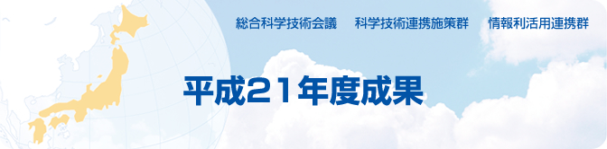

平成21年度成果 総合科学技術会議 科学技術連携施策群 情報利活用連携群
情報の巨大集積化と利活用基盤技術開発連携群の活動 〜情報爆発時代におけるイノベーション創出〜
2．個別成果
科学技術振興調整費採択課題研究代表 京都大学学術情報メディアセンター 教授 美濃 導彦
経済産業省商務情報政策局 情報処理振興課長 東條 吉朗
2−3 電気通信サービスにおける情報信憑性検証技術に関する研究開発
総務省総合通信基盤局電気通信事業部電気通信技術システム課企画官
安全・信頼性対策室長 川村 一郎
2−4 「革新的実行原理に基づく超高性能データベース基盤
ソフトウェアの開発」の活動進捗状況
文部科学省研究振興局 情報課長 舟橋 徹
2−5 「多メディアWeb解析基盤の構築及び社会分析ソフトウェアの開発」の
活動進捗状況
文部科学省研究振興局 情報課長 舟橋 徹